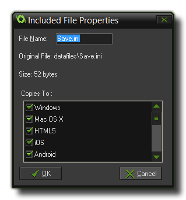

GameMaker:Studio is niet gelimiteerd tot de resources die je maakt in het programma zelf aangezien het een speciale sectie heeft in de resources-boom in het hoofdvenster voor included files (ingesloten bestanden). Hier kan je verschillende soorten bestanden laden (en zelfs submappen maken) en deze zullen ingesloten worden in het uiteindelijke spel als deel van het pakket voor het doelplatform. Bijvoorbeeld, in een windows-spel zullen ze gebundeld worden in de *.exe en geëxporteerd bij het uitvoeren, en in HTML5 zullen ze in de html5_game map gezet worden en opgeslagen op de server.
Opmerking: Als je de Free (gratis) versie van GameMaker:Studio gebruikt, ben je gelimiteerd tot 5 ingelosten bestanden per spel. Voor meer details, zie
hier.
Om een bestand toe te voegen aan je resources moet je rechtsklikken op de included files sectie van de resources-boom en klikken op create included file (maak ingesloten bestand), of als je een submap wil maken, op create group (maak groep). Je zal gevraagd worden om een bestand toe te voegen, of meerdere als je er meer dan één selecteert. Eens het bestand is toegevoegd kan je rechtsklikken op het betsand en klikken op properties (eigenschappen) om de eigenschappen te veranderen:

Hier kan je het bestand van naam veranderen als je dat wil door de file name (bestandsnaam) aan te passen. Onder de bestandsnaam zijn er een aantal opties voor het doelplatform waarnaar dit bestand gekopieerd moet worden. Als je wil dat het bestand enkel geëxporteerd wordt wanneer je het spel uitvoert in een browser, dan vink je enkel "HTML5" aan, enzovoort. Als je geen enkel doelplatform aanvinkt, dan wordt het bestand helemaal niet geëxporteerd. Dit is vooral nuttig als je gebruik wil maken van de configuratiebeheerder om bepaalde configuraties op te slaan en specifieke bestanden te exporteren afhankelijk van de configuratie.
Eens je op "OK" klikt, wordt het bestand opgeslagen met het huidige project in een aparte folder genaamd data-files in de *.gmx directory van het project. Als je hebt gekozen om de naam te veranderen, dan zal het bestand hier de nieuwe naam hebben. Merk op dat je vanaf nu de bestanden in deze folder moet aanpassen, en niet de originele bestanden (tenzij je ze opnieuw gaat insluiten, maar meestal is dat niet nodig).